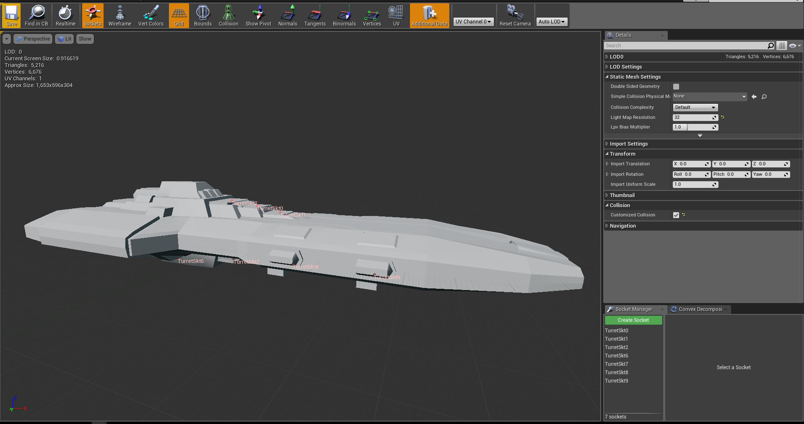
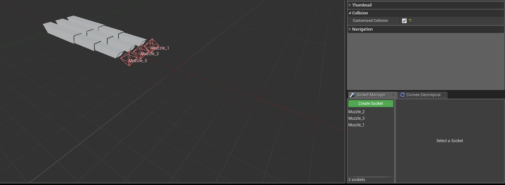
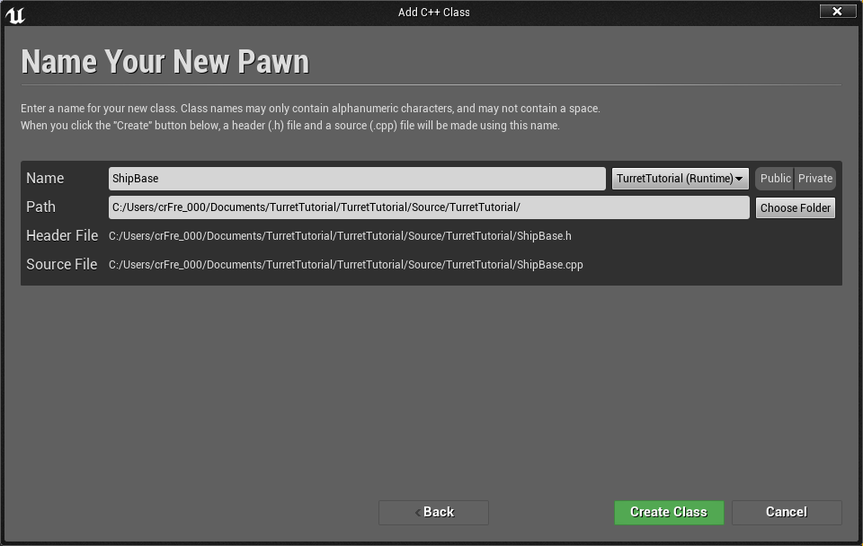
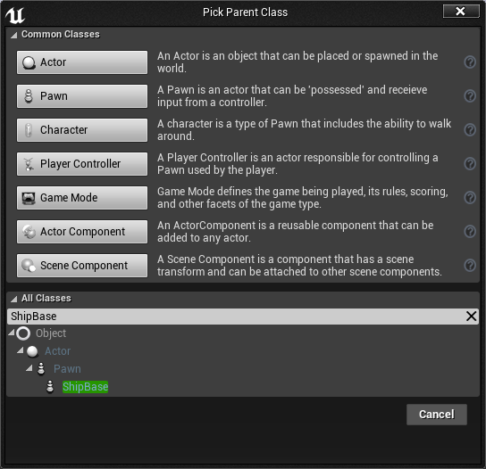
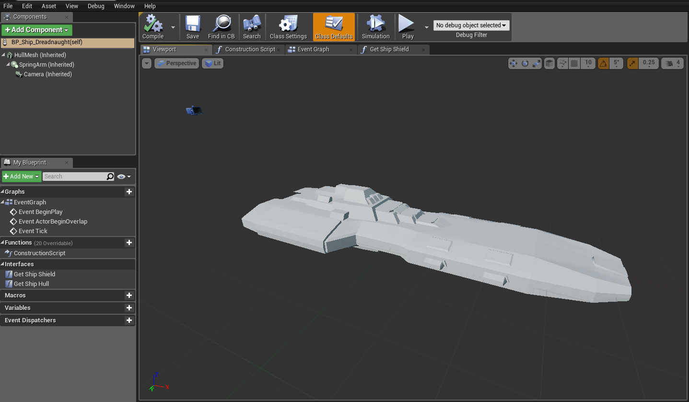
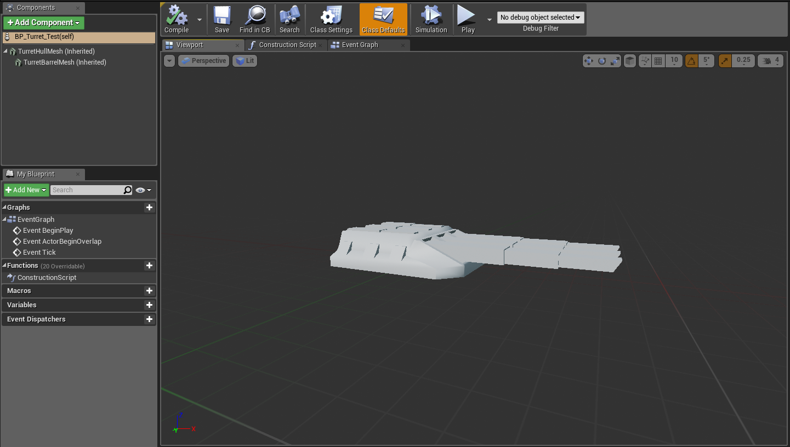
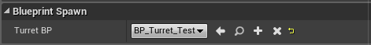
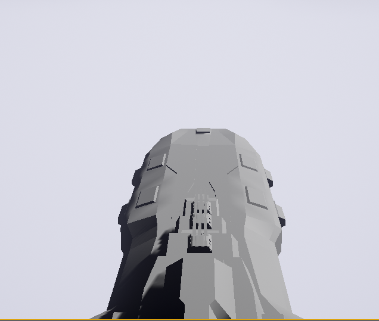
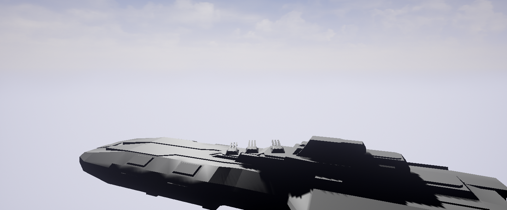
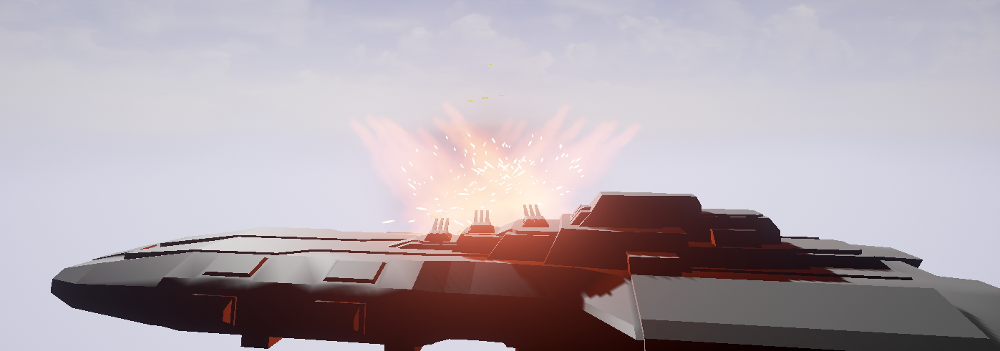

C++ Camera Controlled Turrets
Contents
Overview
This tutorial is aimed at people who want to do a little more C++ programming. Having some prior knowledge of C++ is not needed to follow this tutorial. It will take you from the beginning to end. The end result is having a player controlled ship which it's turrets will follow the direction of the camera.
So I've decided that since I've finally figured out how to make turrets work on battleships/spaceships that I should share my discovery and help anyone else who is having difficulties figuring it out with C++! I'm going to take you through the entire process from start to finish, including the set up needed to get everything working just right. So this tutorial may be a little bit long, but I promise you it's worth it!
Requirements
Before you start this tutorial, you should have a few things prepared and ready.
- C++ empty project.
- Ship mesh
- Turret Chassis mesh
- Turret Barrel mesh
For a little clarification on the Turret meshes, you want two separate meshes to bring into the engine, the body of the turret (which we will refer to as the Chassis) and the barrels of the turret (which we will refer to as the Barrels).
Go on ahead and get all those three meshes imported into the project!
Our Goals
So we are setting out with a few goals to accomplish in this tutorial.
- We want to set up the Ship and Turret base classes
- Extend the Ship and Turret base classes into blueprints
- Get the turrets to spawn on the Ship
- Make the turrets rotate and pitch properly
- Bonus: Get the turrets to fire!
Getting Started
Set up the Ship Mesh
Before we go to much further, we want to make sure that your ship mesh is set up correctly! What we want to do is add some sockets to the ship so our code can spawn the turrets in correctly and at the right locations. So go to where your ship mesh is and double click it. This should bring up the mesh editor in the engine.
Now make sure that the Sockets button is highlighted in the top navbar, and then go to Window -> Socket Manager.
This will make a little window appear off to the right, with a green button named Create Socket.
Go ahead and create some sockets and place them where ever on the mesh you wish! Mine are set up as below.

Set up the Turret Barrel Mesh
Just like the Ship Mesh and placing it's sockets, we want to do the same thing for the barrel mesh, but this time where putting the sockets at the end of the barrels. This is going to be used to help give an origin point of where we are going to spawn our projectiles.

Creating The Base Classes
So let's get those base classes created! We will begin with the Ship Base Class.
So once your project is open in the editor, go to File -> New C++ Class.
You will be prompted with a screen of what to inherit. We want our parent class to be the Pawn.

Then we want to give the class a name, ShipBase is what I used. You can name it anything.

It will only take a moment for the engine to add the code file and structure to your project, so sit tight!
Once that is done, go ahead and repeat this section for the Turret. I named the class TurretBase.
So now you should have two classes created and the files should be open in your IDE.
Initializing the Ship and Turret Classes
Our two classes should look the same and have a few things in the code already like below.
ShipBase.cpp
#include "TurretTutorial.h"
#include "ShipBase.h"
// Sets default values
AShipBase::AShipBase()
{
// Set this pawn to call Tick() every frame. You can turn this off to improve performance if you don't need it.
PrimaryActorTick.bCanEverTick = true;
}
// Called when the game starts or when spawned
void AShipBase::BeginPlay()
{
Super::BeginPlay();
}
// Called every frame
void AShipBase::Tick( float DeltaTime )
{
Super::Tick( DeltaTime );
}
// Called to bind functionality to input
void AShipBase::SetupPlayerInputComponent(class UInputComponent* InputComponent)
{
Super::SetupPlayerInputComponent(InputComponent);
}
ShipBase.h
// Fill out your copyright notice in the Description page of Project Settings.
#pragma once
#include "GameFramework/Pawn.h"
#include "ShipBase.generated.h"
UCLASS()
class TURRETTUTORIAL_API AShipBase : public APawn
{
GENERATED_BODY()
public:
// Sets default values for this pawn's properties
AShipBase();
// Called when the game starts or when spawned
virtual void BeginPlay() override;
// Called every frame
virtual void Tick( float DeltaSeconds ) override;
// Called to bind functionality to input
virtual void SetupPlayerInputComponent(class UInputComponent* InputComponent) override;
};
So the next step is to get our ShipBase and TurretBase classes to actually work so we can extend these base classes out into Blueprints and do some fun stuff with them! The main reason why we are creating a base class for the ship and turret and then extending it out into Blueprints is observing a thing called Object Oriented Programming. I wont go into the semantics of it, but the idea is that we have a common parent class of a Ship and a Turret. We then can create as many variations of these base classes in either Blueprints or Code. This creates flexibility and eliminates having a ton of duplicate code!
In short the ShipBase and TurretBase classes will have all the common properties shared among any ships and any turrets.
ShipBase Class
So let us get our ShipBase.h filled out! First we want to include our newly created TurretBase class.
ShipBase.h
// TurretBase Include
#include "../Turrets/TurretBase.h"
Now we want to get everything else set up, including our Mesh of our ship, then build up the camera and get a few more things sorted. Take a look at the rest of the code below.
ShipBase.h
UCLASS()
class TURRETTUTORIAL_API AShipBase : public APawn
{
GENERATED_BODY()
public:
/** StaticMesh component that will be the visuals for our flying ship */
UPROPERTY(Category = Mesh, VisibleDefaultsOnly, BlueprintReadOnly, meta = (AllowPrivateAccess = "true"))
class UStaticMeshComponent* HullMesh;
/** Spring arm that will offset the camera */
UPROPERTY(Category = Camera, VisibleDefaultsOnly, BlueprintReadOnly, meta = (AllowPrivateAccess = "true"))
class USpringArmComponent* SpringArm;
/** Camera component that will be our viewpoint */
UPROPERTY(Category = Camera, VisibleDefaultsOnly, BlueprintReadOnly, meta = (AllowPrivateAccess = "true"))
class UCameraComponent* Camera;
// Sets default values for this actor's properties
AShipBase(const FObjectInitializer& ObjectInitializer);
// Called when the game starts or when spawned
virtual void BeginPlay() override;
// Called every frame
virtual void Tick( float DeltaSeconds ) override;
/** Returns PlaneMesh subobject **/
FORCEINLINE class UStaticMeshComponent* GetPlaneMesh() const { return HullMesh; }
/** Returns SpringArm subobject **/
FORCEINLINE class USpringArmComponent* GetSpringArm() const { return SpringArm; }
/** Returns Camera subobject **/
FORCEINLINE class UCameraComponent* GetCamera() const { return Camera; }
protected:
// Camera variables so we can control our camera
UPROPERTY(Category = Camera, EditDefaultsOnly)
float SpringArmDistance;
UPROPERTY(Category = Camera, EditDefaultsOnly)
FVector SpringArmSocketOffset;
UPROPERTY(Category = Camera, BlueprintReadWrite, EditAnywhere)
float CameraMaxPitch;
UPROPERTY(Category = Camera, BlueprintReadWrite, EditAnywhere)
float CameraMinPitch;
UPROPERTY(Category = Camera, BlueprintReadWrite, EditAnywhere)
float CameraZoomAmount;
UPROPERTY(Category = Camera, BlueprintReadWrite, EditAnywhere)
float CameraZoomSpeed;
UPROPERTY(Category = Camera, BlueprintReadWrite, EditAnywhere)
float CameraMaxZoom;
UPROPERTY(Category = Camera, BlueprintReadWrite, EditAnywhere)
float CameraMinZoom;
// Camera CURRENT variables
float CurrentCameraZoomDistance;
// Begin AActor overrides
virtual void SetupPlayerInputComponent(class UInputComponent * InputComponent) override;
// End AActor overrides
void CameraYawInput(float Val);
void CameraPitchInput(float Val);
void CameraZoom(float Val);
void CameraZoomIn();
void CameraZoomOut();
Now with the header file completed, we will now add to our ShipBase.cpp file. First were going to modify this original constructor of the class, which should look like this right now...
ShipBase.cpp
// Sets default values
AShipBase::AShipBase()
{
// Set this pawn to call Tick() every frame. You can turn this off to improve performance if you don't need it.
PrimaryActorTick.bCanEverTick = true;
}
And turn it into this...
ShipBase.cpp
AShipBase::AShipBase(const FObjectInitializer& ObjectInitializer) : Super(ObjectInitializer)
{
// Initialize all base values
// Set camera control defaults
SpringArmDistance = 1250.0f;
SpringArmSocketOffset = FVector(0.f, 0.f, 380.f);
CameraMaxPitch = 45.0f;
CameraMinPitch = -45.0f;
CameraMaxZoom = SpringArmDistance * 3;
CameraMinZoom = 500.0f;
CameraZoomAmount = 250.0f;
CameraZoomSpeed = CameraZoomAmount / 3;
// Create static mesh component
HullMesh = CreateDefaultSubobject<UStaticMeshComponent>(TEXT("HullMesh"));
RootComponent = HullMesh;
SpringArm = CreateDefaultSubobject<USpringArmComponent>(TEXT("SpringArm"));
SpringArm->AttachToComponent(RootComponent, FAttachmentTransformRules::KeepRelativeTransform);
// Create the spring arm component
SpringArmDistance = 700.0f; // Sets up default SpringArmDistance
SpringArmSocketOffset = FVector(0.f, 0.f, 60.f); //Sets up default SpringArm Offset
SpringArm->TargetArmLength = SpringArmDistance;
SpringArm->SocketOffset = SpringArmSocketOffset;
SpringArm->bEnableCameraLag = false;
SpringArm->CameraLagSpeed = 15.f;
// Create camera component
Camera = CreateDefaultSubobject<UCameraComponent>(TEXT("Camera"));
Camera->AttachToComponent(SpringArm, FAttachmentTransformRules::KeepRelativeTransform, USpringArmComponent::SocketName);
Camera->bUsePawnControlRotation = false; // Don't rotate camera with the controller
HullMesh->SetCollisionObjectType(ECC_Pawn);
HullMesh->SetCollisionEnabled(ECollisionEnabled::QueryAndPhysics);
// Set this actor to call Tick() every frame. You can turn this off to improve performance if you don't need it.
PrimaryActorTick.bCanEverTick = true;
}
Whew! That was a big change. But were not done just yet, we now should add in our input controls for our camera! Remember you have to match this code in the input controls of the engine!
ShipBase.cpp
void AShipBase::SetupPlayerInputComponent(class UInputComponent *InputComponent)
{
check(InputComponent);
InputComponent->BindAxis("CameraYaw", this, &AShipBase::CameraYawInput);
InputComponent->BindAxis("CameraPitch", this, &AShipBase::CameraPitchInput);
InputComponent->BindAction("MouseWheelUp", IE_Pressed, this, &AShipBase::CameraZoomIn);
InputComponent->BindAction("MouseWheelDown", IE_Pressed, this, &AShipBase::CameraZoomOut);
}
void AShipBase::CameraYawInput(float Val)
{
SpringArm->RelativeRotation.Yaw += Val;
}
void AShipBase::CameraPitchInput(float Val)
{
float NewPitch = (Val * -1.0f) + SpringArm->RelativeRotation.Pitch;
SpringArm->RelativeRotation.Pitch = FMath::Clamp(NewPitch, CameraMinPitch, CameraMaxPitch);
}
void AShipBase::CameraZoom(float Val)
{
CurrentCameraZoomDistance = SpringArm->TargetArmLength;
SpringArmDistance = CurrentCameraZoomDistance + (CameraZoomAmount * Val);
float TargetArmDistance = FMath::Clamp(SpringArmDistance, CameraMinZoom, CameraMaxZoom);
SpringArm->TargetArmLength = FMath::FInterpTo(CurrentCameraZoomDistance, TargetArmDistance, GetWorld()->GetDeltaSeconds(), CameraZoomSpeed);
}
void AShipBase::CameraZoomIn()
{
CameraZoom(1.0f);
}
void AShipBase::CameraZoomOut()
{
CameraZoom(-1.0f);
}
Now were in business! With the initial set up of our ShipBase class, we now need to go on to getting our TurretBase class set up as well!
TurretBase Class
So similarly in the ShipBase.h, we want to get out TurretBase.h file up to snuff. So lets get our class filled out properly...
TurretBase.h
UCLASS()
class TURRETTUTORIAL_API ATurretBase : public APawn, public ITurretInterface
{
GENERATED_BODY()
public:
// Public Variables
FRotator TurretLocalRot;
// Sets default values for this actor's properties
ATurretBase(const FObjectInitializer& ObjectInitializer);
/** StaticMesh component that will be the visuals for the turret */
UPROPERTY(Category = Mesh, EditDefaultsOnly, BlueprintReadWrite, meta = (AllowPrivateAccess = "true"))
class UStaticMeshComponent* TurretHullMesh;
/** StaticMesh component that will be the visuals for the barrels */
UPROPERTY(Category = Mesh, EditDefaultsOnly, BlueprintReadWrite, meta = (AllowPrivateAccess = "true"))
class UStaticMeshComponent* TurretBarrelMesh;
// Called when the game starts or when spawned
virtual void BeginPlay() override;
// Called every frame
virtual void Tick( float DeltaSeconds ) override;
void TurretLookAt();
// Spawns Munitions
UPROPERTY(Category = BlueprintSpawn, EditDefaultsOnly, BlueprintReadOnly)
TSubclassOf<AMunitionsBase> MunitionsBP;
TArray<FName> MuzzleArray;
void GetMuzzleSockets();
void SpawnMunitions(FName _MuzzleSocketName);
//ITurretInterface
virtual void PrimaryFireControl() override;
UPROPERTY(Category = Chasis, BlueprintReadWrite, VisibleAnywhere)
float TurretYawSpeed;
UPROPERTY(Category = Chasis, BlueprintReadWrite, VisibleAnywhere)
float TurretMaxYaw;
UPROPERTY(Category = Chasis, BlueprintReadWrite, VisibleAnywhere)
float TurretMinYaw;
UPROPERTY(Category = Barrel, BlueprintReadWrite, VisibleAnywhere)
float TurretPitchSpeed;
UPROPERTY(Category = Barrel, BlueprintReadWrite, VisibleAnywhere)
float TurretMaxPitch;
UPROPERTY(Category = Barrel, BlueprintReadWrite, VisibleAnywhere)
float TurretMinPitch;
UPROPERTY(Category = Control, BlueprintReadWrite, EditDefaultsOnly)
bool IsOccupied;
UPROPERTY(Category = Control, BlueprintReadOnly, VisibleAnywhere)
bool IsTargeting;
private:
bool IsFiring;
float CurrentChasisRot;
float CurrentBarrelRot;
float CurrentYawMin;
float CurrentYawMax;
FRotator CurrentTurretRot;
FRotator TurretYawRot;
FRotator TurretPitchRot;
};
So now we want to do the same thing with the base constructor class that was generated for us as we did in the ShipBase.cpp file. We want to turn it into this...
TurretBase.cpp
// Sets default values
ATurretBase::ATurretBase(const FObjectInitializer& ObjectInitializer) : Super(ObjectInitializer)
{
// Create the static mesh component
TurretHullMesh = CreateDefaultSubobject<UStaticMeshComponent>(TEXT("TurretHullMesh"));
TurretBarrelMesh = CreateDefaultSubobject<UStaticMeshComponent>(TEXT("TurretBarrelMesh"));
RootComponent = TurretHullMesh;
TurretBarrelMesh->AttachToComponent(RootComponent, FAttachmentTransformRules::KeepRelativeTransform);
// Set default variables
IsOccupied = false;
IsFiring = false;
TurretYawSpeed = 20.f;
TurretMaxYaw = 180.f;
TurretMinYaw = -180.f;
TurretPitchSpeed = 20.f;
TurretMaxPitch = 45.f;
TurretMinPitch = -1.f;
TurretLocalRot = FRotator(0.f, 0.f, 0.f);
TurretYawRot = FRotator(0.f, 0.f, 0.f);
TurretPitchRot = FRotator(0.f, 0.f, 0.f);
CurrentYawMax = (TurretHullMesh->GetRelativeTransform().GetRotation().X) + TurretMaxYaw;
CurrentYawMin = (TurretHullMesh->GetRelativeTransform().GetRotation().X) + TurretMinYaw;
IsTargeting = false;
// Set this actor to call Tick() every frame. You can turn this off to improve performance if you don't need it.
PrimaryActorTick.bCanEverTick = true;
}
Next we want to prepare our Tick event. What we are doing here is simply calling a function every frame that will handle the turrets logic to look at our camera's focal point!
TurretBase.cpp
// Called every frame
void ATurretBase::Tick( float DeltaTime )
{
TurretLookAt();
Super::Tick( DeltaTime );
}
With that complete lets actually just get in an empty class so we can compile. We will handle the TurretLookAt logic in just a bit. While we do that, lets get a few more skeleton functions out of the way.
TurretBase.cpp
void ATurretBase::TurretLookAt()
{
}
/* ITurretInterface */
void ATurretBase::PrimaryFireControl()
{
}
void ATurretBase::GetMuzzleSockets()
{
}
void ATurretBase::SpawnMunitions(FName _MuzzleSocketName)
{
}
With that, compile! We should have the base classes started! The next step is to get them extended into Blueprints to begin getting some results.
Extending The Base Classes
So now that were done getting the basics of the classes in, let's quickly extend those two classes into blueprints so we can set up the turret and the ship!
Let's do the ship first. It should be really straight forward and simple. Right click in the content browser and click Blueprint Class.
Now when it asks to pick a parent class, you want to go to the very bottom of the window, where it says All Classes, click that and then type in ShipBase (Or whatever you named it)

Click Create, then name the blueprint what ever you want. I named it BP_Ship. Do the same thing for the TurretBase.
Once the blueprints are created, there is not much else to do for the BP_Ship. But there is something you need to take care of in the BP_Turret. Open it up, and go to the Viewport tab on the turret, then adjust the barrel mesh so it sits correctly on your turrets Chasis. In the end you should have something like the following two images.
 
Adding Turret Functionality
Now with all the previous work set up and running, now we can focus on adding functionality to our turrets!
Turret Spawn Logic
So in this section we are going to get the code in to spawn the turrets onto our ship! This can be done with a simple addition to our ShipBase class file. What we are going to do is create a set of functions in our Ship class that will handle finding the turret sockets, spawning the turrets to those turret sockets, and then have a function to delete the spawned turrets properly so when the ship dies in your game, it will do the proper deletion.
So go back to your IDE and add the code below.
ShipBase.h
// Spawn Turrets
UPROPERTY(Category = BlueprintSpawn, EditDefaultsOnly, BlueprintReadOnly)
TSubclassOf<ATurretBase> TurretBP;
TArray<FName> TurretArray;
TArray<ATurretBase*> SpawnedTurretArray;
void GetTurretSockets();
void SpawnTurret(FName _TurretSocketName);
void DestroyTurrets();
Now got to ShipBase.cpp and lets fill out those three functions!
ShipBase.cpp
void AShipBase::GetTurretSockets() {
// We store all the socket names into our own Turret Array
TurretArray = HullMesh->GetAllSocketNames();
// Then we iterate through that array and call our SpawnTurret() function and pass it our array's index
for (int i = 0; i < TurretArray.Num(); i++) {
SpawnTurret(TurretArray[i]);
}
}
/** Spawns the turrets onto the sockets of the ship */
void AShipBase::SpawnTurret(FName _TurretSocketName)
{
// First we want to make sure these values are all zeroed out
FVector SocketLocation;
FTransform SocketTransform;
SocketLocation = FVector(0, 0, 0);
SocketLocation.Rotation() = FRotator(0, 0, 0);
// Make sure the world exists first
UWorld* const World = GetWorld();
if (World && TurretBP != NULL)
{
// Set the spawn parameters
FActorSpawnParameters SpawnParams;
SpawnParams.Owner = this;
// This is where we instantiate our new Turret! RailGun_T can be whatever you want to name it
ATurretBase* RailGun_T = GetWorld()->SpawnActor<ATurretBase>(TurretBP, SocketLocation, SocketLocation.Rotation());
// Assign our newly spawned turret its rotation
RailGun_T->TurretLocalRot = SocketLocation.Rotation();
// Now we add that newly spawned turret to our array of pointers so we can reference it later
SpawnedTurretArray.Add(RailGun_T);
// Now we make sure our turret isn't null, and then attach it to our socket's location.
if (RailGun_T != NULL)
{
RailGun_T->AttachToComponent(this->RootComponent, FAttachmentTransformRules::KeepRelativeTransform, _TurretSocketName);
}
}
}
void AShipBase::DestroyTurrets()
{
// Iterate over the turrets in the array we have them stored
for (int i = 0; i < SpawnedTurretArray.Num(); i++) {
SpawnedTurretArray[i]->DetachFromControllerPendingDestroy();
SpawnedTurretArray[i]->Destroy();
}
}
Now you just need to add our spawn function to the BeginPlay in ShipBase.cpp
// Called when the game starts or when spawned
void AShipBase::BeginPlay()
{
Super::BeginPlay();
GetTurretSockets();
}
Let us recap on what we did. First we went into the header file and created a few variables and three functions. The variables are important for a few reasons.
-
TSubclassOf<ATurretBase> TurretBP;
- This creates a pointer that we assign in our BP_Ship for any turret we want! We can create multiple of these pointers for when we have multiple different types of turrets.
-
TArray<FName> TurretArray;
- We did this to hold onto the sockets we find.
-
TArray<ATurretBase*> SpawnedTurretArray;
- We created this to hold onto the spawned turrets so we can easily reference them later.
Now for the functions, we have three.
-
void GetTurretSockets();
- To get the turret sockets on the ship.
-
void SpawnTurret(FName _TurretSocketName);
- To spawn a single turret, by passing it the socket we want it spawned to.
-
void DestroyTurrets();
- To delete all the turrets we spawned for proper deletion for when the ship is deleted (during game-play)
Now compile your code! Now if you go into the engine and double click your ship blueprint, in the details pane you should see a category called Blueprint Spawn. Inside that category is a picker, you want to click it and add in your Turret Blueprint.

Now set the Default Pawn Class to your ship blueprint. Click Play and you should have a ship that is spawning turrets!

Turret Control
Now for the more complicated step in the logic department. Getting our turrets to look at our camera's focal point. This was the entire reason why your in this tutorial now aren't you?
Now before we go into the code I want to take a moment to explain what were going to try and do.
So what we want is for the turrets to look at wherever our cameras focal point is. So when we look right, the turrets should track our movement and attempt to point to where we are looking. In order to do this, they need to get our forward vector to know where exactly they are going to point. In order to figure out how much they need to rotate to get to our forward vector from the camera, they will need to take their forward vectors and normalize it against the cameras. Then all we do is take that normalized vector and apply it to our local rotation and voila! Our Turrets should now be looking at our camera's focal point!
It sounds pretty simple right? Well now it is! I'll be honest it took me awhile to figure this out on my own and get it working just right. So you remember that TurretLookAt() function we created? Well now it's time to fill that sucker out.
In the TurretBase.cpp file, go to where you have the skeleton of the function.
void ATurretBase::TurretLookAt()
{
// We want a pointer to hold our player controller.
APlayerController* PC = Cast<APlayerController>(Cast<APawn>(GetAttachParentActor())->GetController());
// Then we make sure our player controller exists.
if (PC)
{
// Set the Focal Point Distance
float FocalDistance = 10000.0f;
// Get Camera Vector & Rotator
FVector CameraLocation = PC->PlayerCameraManager->GetCameraLocation();
FRotator CameraRotation = PC->PlayerCameraManager->GetCameraRotation();
// Get Turrets Vector & Rotator
FVector TurretLocation = GetActorLocation();
FRotator TurretRotation = GetActorRotation();
// Handle Turret Rotation
FVector FocalPoint = CameraLocation + (CameraRotation.Vector() * FocalDistance);
FVector TurretToFocal = FocalPoint - TurretLocation;
FVector TurretToFocalLocal = TurretRotation.UnrotateVector(TurretToFocal);
FRotator TurretFocalLookDirection = TurretToFocalLocal.Rotation();
FRotator TurretYaw = FRotator(0, TurretFocalLookDirection.Yaw, 0);
CurrentTurretRot = GetActorRotation();
// We check to see if the turret is within it's movement range, if it is, we add the rotation and do one last addition check.
if (FMath::IsWithin(CurrentTurretRot.Yaw, TurretMinYaw, TurretMaxYaw))
{
TurretHullMesh->AddRelativeRotation(TurretYaw);
// Now we check to see if it's pretty close to our target, when it is we toggle a boolean to be used later!
if (TurretYaw.Yaw > 0.f)
{
IsTargeting = false;
}
}
else {
IsTargeting = false;
}
// Now it's time to do the same for the turret's barrels pitch!
FRotator TurretBarrelPitch = FRotator(TurretFocalLookDirection.Pitch, 0, 0);
TurretBarrelPitch.Pitch = FMath::Clamp(TurretBarrelPitch.Pitch, TurretMinPitch, TurretMaxPitch);
TurretBarrelMesh->SetRelativeRotation(TurretBarrelPitch);
// Do the targeting check with the barrels as well!
if (TurretBarrelPitch.Pitch == TurretFocalLookDirection.Pitch)
{
IsTargeting = true;
}
else
{
IsTargeting = false;
}
}
}
Now with that filled out, we want to go to our Tick() function and add our function call to it!
TurretBase.cpp
// Called every frame
void ATurretBase::Tick( float DeltaTime )
{
TurretLookAt();
Super::Tick( DeltaTime );
}
Compile and run the game! Now your turrets should rotate and the barrels should pitch! And that is how you get your turrets to follow your cameras focal point!

Turret Firing
Now, how about we get those turrets to fire? Everybody likes a good BOOM to their code! Now this section will be a little less informative. It's a challenge out to you to actually get the some of the set up work done! You've done it before, now you should have the tools to get the Munitions ready!
For how I got my projectiles set up, was that I followed the same steps in creating a MunitionsBase Class, and then I got it set up to hold a spherical mesh. Once that was done I made sure I added it to a collision channel for the projectiles.
Once you have the projectile class created, extend it into a blueprint!
Now that we have a munitions object to use, lets go back to our TurretBase.cpp. You remember earlier making a few more skeletons functions that we haven't filled out yet. Those functions were PrimaryFireControl(), GetMuzzleSockets(), and then SpawnMunitions().
It follows the similar path as to spawning the turrets. We want to find the muzzle sockets on the barrel mesh, add it to an array, then spawn the projectiles at the muzzle locations and add an impulse to the projectile.
TurretBase.cpp
/* ITurretInterface */
// This acts as a gate for firing any projectiles. So if the turrets cannot see your cameras focal point they wont fire!
void ATurretBase::PrimaryFireControl()
{
if (IsTargeting)
{
GetMuzzleSockets();
}
}
// Same steps as to getting the sockets for the turrets!
void ATurretBase::GetMuzzleSockets()
{
MuzzleArray = TurretBarrelMesh->GetAllSocketNames();
for (int i = 0; i < MuzzleArray.Num(); i++) {
SpawnMunitions(MuzzleArray[i]);
}
}
// Almost the same as spawning the turrets, but this time we check to make sure the projectile blueprint exists
void ATurretBase::SpawnMunitions(FName _MuzzleSocketName)
{
if (MunitionsBP != NULL)
{
// Get the location and the rotation for the new projectile
FVector SpawnLocation = TurretBarrelMesh->GetSocketLocation(_MuzzleSocketName);
FRotator SpawnRotation = TurretBarrelMesh->GetSocketRotation(_MuzzleSocketName);
// Making sure the world exists, if it does we spawn it!
UWorld* const World = GetWorld();
if (World && MunitionsBP) {
AMunitionsBase* Projectile = World->SpawnActor<AMunitionsBase>(MunitionsBP, SpawnLocation, SpawnRotation);
// We give the projectiles an owner! This can be used later for hit detection and the like!
Projectile->OwningPlayer = GetController();
Projectile->OwningActor = this->GetAttachParentActor();
// This is completely option. I made a muzzle flash for fun. You can remove the below If statement if you want.
if (MuzzleFX)
{
UParticleSystemComponent* MuzzleFlash = UGameplayStatics::SpawnEmitterAtLocation(this, MuzzleFX, SpawnLocation, SpawnRotation, true);
}
}
}
}
Now in order to make sure you can fire your turrets, we need to make sure we have a player input set up in the editor to control that. But one more step needs to be taken to tell the turrets that the player is firing! We can't just simply add the controls to the turrets themselves, we are going to take advantage of that Interface function, PrimaryFireControl()!
Now go to your ShipBase.cpp and add a input component.
InputComponent->BindAction("PrimaryFire", IE_Pressed, this, &AShipBase::ShipPrimaryFire);
Now we create the function! We are still in ShipBase.cpp. What were going to do here is loop through the SpawnedTurretArray and with the interface, tell them to execute the function PrimaryFireControl(). One purpose of Interfaces is to give us a way to call functions in another class or object when we don't want to hold onto the instantiated class in caller.
ShipBase.cpp
void AShipBase::ShipPrimaryFire() {
for (int i = 0; i < SpawnedTurretArray.Num(); i++) {
ITurretInterface* TheInterface = Cast<ITurretInterface>(SpawnedTurretArray[i]);
if (TheInterface)
{
TheInterface->PrimaryFireControl();
}
}
}

Now before we continue, there is one last thing we need to do! You need to add a blank C++ class through the editor, you should name these files TurretInterface. Fill these files out like so.
TurretInterface.cpp
#include "TurretTutorial.h"
#include "TurretInterface.h"
UTurretInterface::UTurretInterface(const FObjectInitializer& ObjectInitializer)
: Super(ObjectInitializer)
{
}
// This is required for compiling, would also let you know if somehow you called
// the base event/function rather the override version
void ITurretInterface::PrimaryFireControl()
{
}
TurretInterface.h
#pragma once
#include "TurretInterface.generated.h"
UINTERFACE(MinimalAPI)
class UTurretInterface : public UInterface
{
GENERATED_UINTERFACE_BODY()
};
class ITurretInterface
{
GENERATED_IINTERFACE_BODY()
public:
virtual void PrimaryFireControl() = 0;
};
Now, with this you should be able to compile your project. These two files are primarily to set up the class, to be accessible globally but more importantly, allow the project to compile! Now let me spend just a moment to explain why the interface is useful and how it pertains to our application here. Interfaces in C++ allow you to set up game wide event triggers directly in C++ or the level blueprint. Now I wont spend the time explaining on how to open the C++ Interfaces to blueprints in this tutorial, but I may cover it in my second tutorial when I extend this out to support C++ Networking.
You can set up Interfaces like the one we just did for many things, for example, creating a special event such as a capital ship exploding and then having a multitude of different actors respond to it.
Conclusion
There you have it! You now have a ship that can spawn turrets that will look to where your camera is pointing and also fire! Your just a couple steps away from creating a ship to ship combat game! This is just one out of a few ways of accomplishing this, and I do not claim this the most efficient but it is the solution I came up with. I'm particularly proud of it and find it a big achievement.
I do hope you found this tutorial helpful! If you have any questions or suggestions, feel free to PM me on the Unreal Engine Forums! It is after all my first tutorial and would love some feedback!
IntVoid
( )